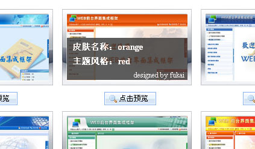

在“框架根目录/skins”目录下可以看到有多个文件夹，例如sky、grass等。每一个文件夹就是一个皮肤包。
框架的主页会引入皮肤包中的import_skin.css。import_skin.css代码如下
可以看到这个css引入了两个文件，style.css是真正的皮肤样式文件，而custom.css是在“框架根目录/skins”目录下，作为所有皮肤包都会引入的公共css，
可以将自定义的css或使用第三方css放在skins/custom.css中，这样无论哪个风格的皮肤都会起作用。
在使用某一种皮肤之前首先要选中一种导航结构页作为主页。例如要使用纵向抽屉式导航结构，对应的是nav_accordtion.html。
用浏览器打开nav_accordtion.html后，点击右上角的“皮肤管理”，可以看到该结构页面所有的皮肤。鼠标移到某一种皮肤缩略图上，可以看到上面写着如
“皮肤名称：orange 主题风格：red”的字样。
效果如下：

用编辑器打开nav_accordtion.html，可以看到有一句如下代码：
将上面代码中路径里的sky换成刚才的“皮肤名称”即orange，将themeColor="green"中的blue换成刚才的“主题风格”即red。
这样就变成了想要的皮肤。至于框架引入的子页面无需做任何修改，每个子页面在初始时都会得到皮肤设置自动适应框架主页。
另外顺便说一下这两个值的作用。其中“皮肤名称”就是皮肤包中文件夹名字，目的是让页面找到相应的css路径；“主题风格”是让框架选择合适的弹出窗口风格和日期控件的风格。
如果想要实现在皮肤管理中让用户点一个按钮自动换肤，可以使用服务端语言动态修改主页的“皮肤名称”和“主题风格”，并将这两个值存入数据库或session中。
两种做法效果各有不同。存入数据库和用户表关联，会始终记住当前用户选择的皮肤，下次打开时会默认是他上次选的风格；存入session无需与用户关联。当用户关闭浏览器下次再重新打开时，会自动还原为默认的皮肤。
这里以纵向抽屉式导航结构为例，实现了一个存入session的动态换肤主页。见根目录下的nav_accordtion.jsp（需要将框架目录放在部署在服务器端，通过http访问才可看到效果）
动态换肤效果请访问：http://web.uur.cn